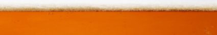

<navbar id="navbar" class="app-navbar no-search">
  <picture class="navbar-image-bg">
    <source srcset="img/navbar-large-desktop.jpg" media="(min-width: 1024px)">
    <source srcset="img/navbar-desktop.jpg" media="(min-width: 768px)">
    <source srcset="img/navbar-tablet.jpg" media="(min-width: 425px)">
    <source srcset="img/navbar-mobile.jpg" media="(min-width: 320px)">
    
  </picture>

  <div class="navbar-logo">
    <a href="/">Beerflix</a>
  </div>
  <div class="filter-container">
    <form id="search-form" class="filter-input">
      <input placeholder="search..." class="input search text" type="text">
      <input placeholder="year" class="input search date" type="text">
      <button type="submit" class="button search">Find</button>
    </form>
  </div>
  <div class="navbar-icon">
    <i id="navbar-search" class="fas fa-search"></i>
    <i id="navbar-close" class="fas fa-times"></i>
  </div>
</navbar>